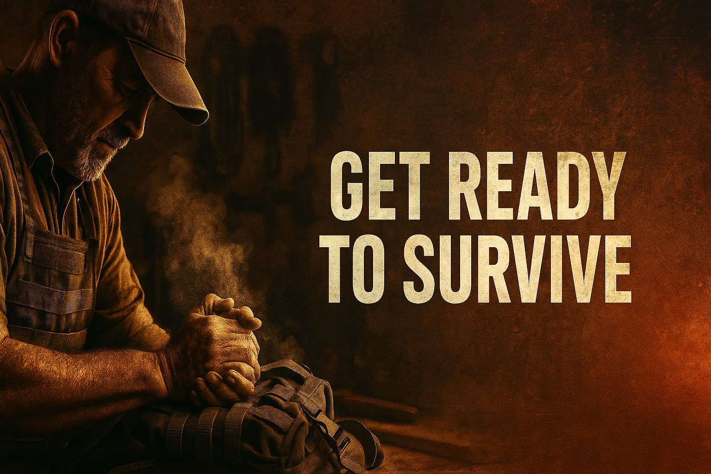
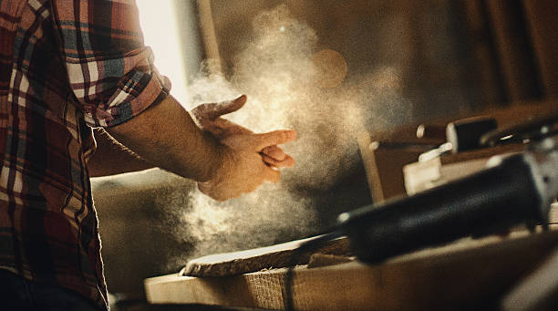

A warrior isn’t the loudest guy in the room or the one starting fights with random strangers at a dive bar.
A warrior is the man who’s boringly prepared when things go sideways.
Here’s the part most men choke on:
If you want your family to sleep well at night, you cannot live like a spectator with a phone addiction and a soft belly.
Not everything in your life is supposed to feel good.
Not everything is supposed to be easy. You weren't put on this earth to be happy. happiness and fulfillment are not synonymous.
Your problems aren’t special — they’re just loud because you stopped doing hard things that shut them up.
Your woman doesn’t need a “someday I’ll get my life together” man.
Your kids don’t need a “well, at least I tried” man.
They need a dangerous, disciplined, steady man who shows up when it counts.
The world keeps selling men candles, skin care, and escape hatches and calling it “self-care.”
Most of it is just sedation with better branding.
You feel anxious, weak, depressed, unfocused, irritated, and lost because you were built for pressure and responsibility, not for DoorDash, infinite scroll, and arguing with strangers online.
You were built for tests, not treats.
A man without challenge becomes a man without purpose.
And a man without purpose slowly turns into dead weight. And deep down he knows it.

Most guys stay on the safe side of the fence. Your family needs the man who can endure and stay sharp, and strength is NEVER found in a comfortable place.
The Modern Man’s Disease: Avoidance and distraction
Most men don’t have a “feelings” problem, despite how much this modern feminist society tries to guilt men for not being emotionally unhinged like women.
What they have is an avoidance problem. Always taking the path of least resistence.
They avoid conflict.
They avoid rejection.
They avoid hard conversations.
They avoid discipline.
They avoid pain.
They avoid mirrors — the literal ones and the metaphorical ones.
Then they wonder why their life feels like a slow-motion car crash with them trapped in the passenger seat.
Everything that builds a man is found on the other side of discomfort.
The barbell, the awkward conversation, the extra shift, the long walk, the lonely night where you actually sit with your thoughts instead of nuking them with content.
Think of a butterfly. If you cut the cocoon open to “help,” it dies.
The struggle is literally what builds the wings.
Same thing with you. You keep trying to cut yourself out of every hard thing and then wonder why you can’t fly.
You want out of the weak, avoidant version of yourself?
Here’s where it starts.
1. Stop letting your feelings run the show. "Follow your heart" is terrible advice.

Win the inner war first. The outer world is just where you collect the trophies.
You are not your feelings.
You’re the one who decides what to do with them.
Anger, fear, boredom, loneliness — none of those make you a bad man.
What you do with them is the whole story.
Weak men react.
Strong men respond.
If every spike of emotion pulls you around by the nose, you’re not in charge — your lizard brain is.
And that thing is only good at four moves: fight, run, fuck or eat something.
Try this starting today:
- When you’re angry — shut your mouth for 10 seconds and breathe. You can’t take back words, but you can delay them.
- When you’re anxious — do one small task that moves your life forward. Make the call. Send the email. Take the walk.
- When you’re sad — move your body. Clean a room, lift something heavy, walk until your brain quiets down.
- When you’re overwhelmed — break the problem into stupid-small steps and attack step one. Momentum is a drug. Use it.
Discipline is doing what’s right even while your feelings scream for the opposite.
That’s how you grow a spine instead of a script full of excuses.
2. Fix your body — it’s the engine of your entire life
You don’t need a perfect plan. You just need to stop living like a broken lawn chair.
If you’re always tired, always aching, always slow, always winded, always inflamed,
always moody, always foggy — your body isn’t “old,” it’s under-maintained.
No, it’s not all genetics.
A lot of it is drive-thru food, no sunlight, and sitting like a question mark for 12 hours a day.
Strong men are built, not born.
A weak body creates a weak mind, weak choices, and weak leadership.
You don’t have to be a bodybuilder.
You just can’t afford to be the guy who gets winded tying his boots.
Simple rules to stop being soft:
- Walk 30–60 minutes every day. Non-negotiable.
- Lift 3–5 sets of something heavy, 2–4 times a week.
- Kill most processed sugar. Your joints and brain will thank you.
- Sleep like it’s part of your job, because it is.
- Stop treating food like a therapist and beer like a personality trait.
If you live like a wreck, everyone around you pays the price.
Your woman notices. Your kids notice. Predators notice.
And deep down, you definitely notice.
3. Learn skills that make you hard to kill

Tools, skills, and calloused hands age a lot better than high scores and hot takes.
Modern men are walking encyclopedias of useless information.
They can name every character in three different universes but can’t shut off the water to their own house.
You don’t have to be Rambo.
But you do have to be useful.
Every man should know how to:
- Defend himself and his family physically.
- Handle common firearms safely and competently.
- Deal with basic medical issues until help arrives.
- Read a paper map and navigate without a phone.
- Use hand tools without bleeding all over the project.
- Build, repair, or rig basic solutions when something breaks.
- Start and maintain a fire.
Competence creates confidence.
Confidence creates calm.
Calm creates leadership.
Your family doesn’t need a mascot.
They need a leader who can fix things when they break — including himself.
4. Stop numbing yourself with bullshit

You can’t wake up if you never step outside the dream.
Most men today aren’t living a life — they’re performing one.
You’re not thinking your own thoughts. You’re reciting the algorithm’s script,
stitched together from TikTok brainrot, Instagram flexes, and Facebook reels designed to
fracture your attention span so badly you can’t even finish a sentence without checking your phone.
And here’s the cold truth:
You don’t even know who you are anymore — you only know who you’re pretending to be.
Every selfie you curate, every caption you polish, every “relatable” post you copy,
every filter you slide across your face…
it all becomes another layer of separation between you and the real you.
You built a digital avatar, and now you’re exhausted from trying to keep up with him.
No wonder you feel socially anxious —
you’re not scared of people…
you’re scared they’ll see the real you under the character you designed.
You want freedom, but you’re scrolling yourself deeper into a cage.
The digital simulation keeps you weak on purpose:
- Brainrot TikToks that fry your ability to focus for more than 12 seconds
- Reels engineered to reset your dopamine like a casino slot machine
- Memes replacing your worldview with recycled opinions
- Algorithms feeding you emotions you never earned
- Constant stimulation keeping your mind too foggy to rebel
When was the last time you formed your own idea?
When was the last time you sat alone with your thoughts and didn’t feel twitchy?
That tension you feel when the phone is out of reach?
That isn’t boredom.
That is dependency.
You are withdrawing from the simulation, and it scares you.
Because if you unplug…
if you sit in silence…
if you delete the noise…
you might have to face the person you’ve been avoiding for years:
yourself.
But here’s the power in that:
you cannot become a strong man, a grounded man, a present man, a free man
while your mind is owned by corporations who profit when you stay distracted.
Real life — the life that makes you whole — happens in the conversations you actually remember,
the moments your phone didn’t steal,
the ideas that grow in silence,
the confidence that comes from being instead of performing.
You will never feel masculine, centered, or fulfilled inside the digital terrarium
built to farm your attention and sell you back your identity at $0.03 CPM.
Escape now, while you still remember how.
Before the simulation becomes the only reality your brain recognizes.
The firelight, the woods, the quiet, the face-to-face moments…
that’s where the real world lives.
That’s where your mind detoxes.
That’s where you find out who the hell you actually are.
5. Set standards your family can be proud of
Weak men chase numbing.
Strong men chase clarity.
A weak man lets the algorithm shape his identity.
A strong man builds his identity through discipline, silence, and action.
Your family doesn’t need a guy who knows every meme trend.
They need a man whose presence stabilizes the entire room.
- If you’re disciplined, they feel safe.
- If you’re mentally present, they trust you.
- If you’re physically capable, they rely on you.
- If you’re emotionally grounded, they lean on you.
The emotional climate of your home is shaped by the strength — or weakness — of your inner world.
And your inner world can’t grow inside a digital simulation.
Unplug.
Reclaim your attention.
Reclaim your identity.
Reclaim your life.
6. Become the kind of man pressure respects
Pressure doesn’t care how you feel. It only respects preparation.
Life doesn’t care how you feel.
Danger doesn’t care.
Crisis doesn’t care.
The bill collector doesn’t care.
Pressure only respects preparation and adaptability.
If you don’t train under stress, stress will eat you alive the first time it really shows up.
Start here:
- Regularly do things that scare you a little.
- Do things that exhaust your muscles and lungs.
- Practice thinking while uncomfortable — cold showers, hard hikes, timed workouts.
- Build routines that don’t care whether you “feel motivated.”
When pressure hits — and it will — you’ll either be the calm one giving instructions,
or the guy in the corner looking for a place to sit down. You choose.
7. Build a mission bigger than your comfort
Weakness thrives in meaningless lives.
Men crack when they have nothing worth fighting for.
Your mission is not to “stay entertained until you die.”
Your mission is to build, protect, provide, and leave something behind that isn’t just debt and old screenshots.
Got a family? That’s your first mission.
No family yet? Build a life so solid that when you do, they’re stepping into a fortress, not a circus.
Your mission might include:
- Raising kids who are strong, kind, and grounded.
- Protecting your woman physically, emotionally, and spiritually.
- Building a home that can ride out both financial storms and real ones.
- Keeping your body functional and dangerous into old age.
- Providing a little more security this year than you did last year.
Happiness isn’t the goal.
It’s a side effect of living like a man with a mission.
Bottom Line: Weakness is a luxury your family can’t afford
The world is not getting softer.
The storms are not slowing down.
Your comfort will not save you — it will drown you.
The time to learn to swim is before the boat starts sinking.
The good news? Strength isn’t genetic.
It’s a daily decision repeated until it becomes who you are.
Start today.
Not tomorrow.
Not “after things settle down.”
Today — with one small, brutally honest promise you actually keep.
Become the man who leans into difficult things.
Become the man no one wants to bet against.
Become the man your family can look at and quietly think:
“We’re safe because he’s here.”
Weakness is a luxury your family cannot afford.
Strength is a duty you can’t keep dodging.
.jpg)
14-in-1 Survival & Emergency Kit
Everything you need for the worst day of your life — knife, compass, fire starter, wire saw, multitool, and more.
Buy on eBay →
- Building a home or sanctuary that can ride out storms—financial and literal.
.jfif)
Stainless Steel Camp Cook Kit
Boils water fast, cooks real meals, and fits perfectly in any bug-out bag.
Buy on eBay →
The world is shifting fast. The storms are coming. Weak men drown. Prepared men pull their families to higher ground.